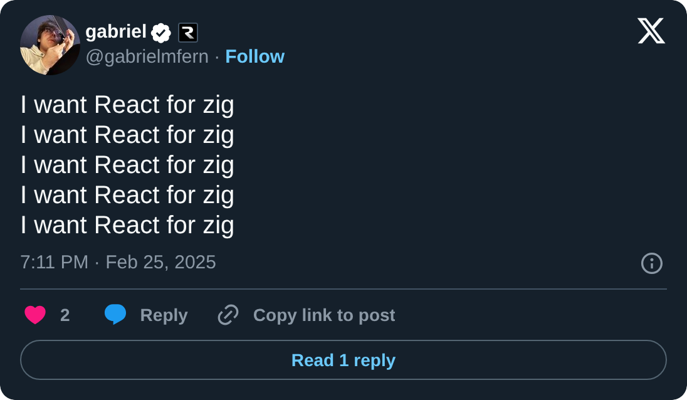
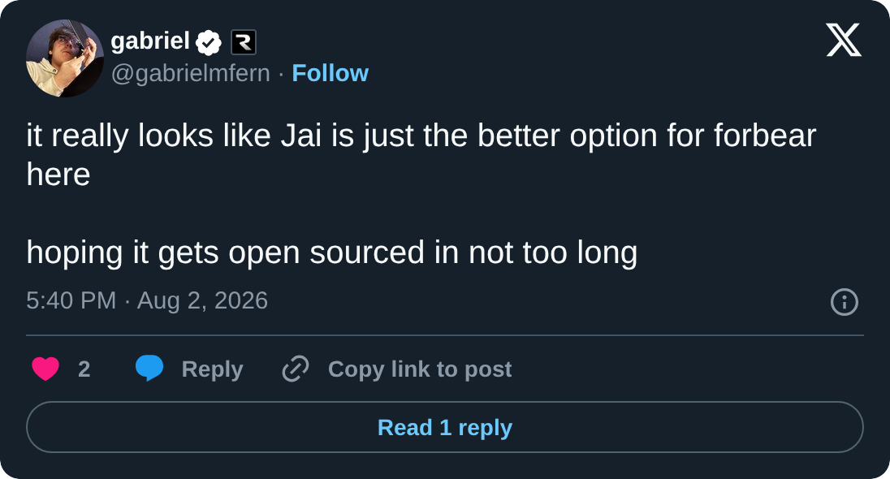
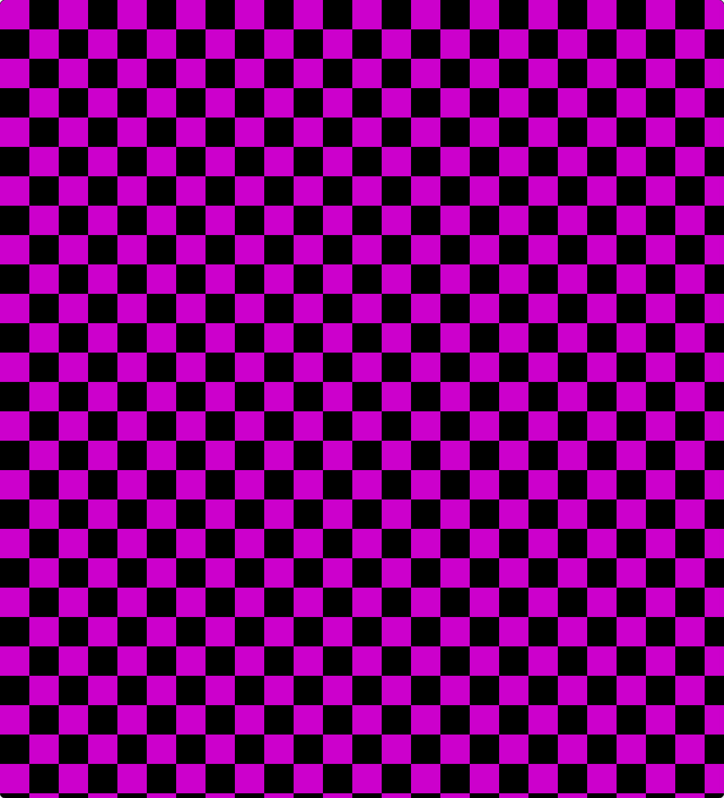

entry log 001: I'm rewriting everything (again)
I'm rewriting forbear from Zig in Jai, from scratch, once again.
forbear is a GUI framework. I want apps to be beautiful like a website, as fast as the computer can make them, and to have the developer experience that React provides.
I believe all software has become putrid, slow and unnecessarily wasteful with resources. This has been the only economically viable option because it's so insanely hard to build a desktop app, especially for web developers, who I perceive to be most of the programmers today. forbear is meant to change that.
Looking back
I had the idea to write a Bible program. I wanted to read on my computer without ads and such, so I tried Tauri, since I thought Electron would be slow. It turned out to be very slow on Linux too, because the webviews there aren't very good. That's when the idea for forbear started:

The first version of forbear was in Zig with OpenGL. It was my first time doing "serious" graphics, and I was learning OpenGL and Zig (my first low-level language) at the same time. I did countless things wrong that first time. I used FreeType, but then I thought I could maybe write my own font renderer, so I started trying to do it on the GPU and found out that it wasn't that easy.
It didn't go very well, so in December 2025 I rewrote it, still in Zig, to get it right. By July 2026 the second version had 567 commits and about 23 thousand lines of code, and it got much, much further. It has:
- its own windowing code for Wayland, Windows and macOS
- a Vulkan renderer with text, rounded corners, borders, shadows, gradients and blend modes
- a flexbox-like layout system inspired by Clay
- mouse and keyboard events, focus, scrolling and IME input
- React-like hooks for state, context and animations
It was good enough to rebuild parts of the uhoh.com home page and of wayland-book.com. I'm quite proud of it.
This is what writing a forbear app looked like:
fn App() void {
forbear.component(.{})({
forbear.element(.{
.style = .{
.width = .grow,
.direction = .vertical,
},
})({
const count = forbear.useState(u32, 0);
forbear.printText("Count: {d}", .{count.*});
forbear.element(.{
.style = .{
.background = .{ .color = .{ 0.0, 0.0, 0.0, 1.0 } },
.borderRadius = 8.0,
},
})({
if (forbear.onClick()) {
count.* += 1;
}
forbear.text("Increment");
});
});
});
}Why I'm starting over
Zig doesn't fit forbear
The previous version was written in Zig, and Zig doesn't seem to be the best language for this project. For the sake of its principles, I feel like Zig ends up making decisions that have more cons than pros. For example, being forced to handle return values means you can't forget to handle an error, but it also rules out an entire category of APIs I could implement. And that has no practical benefit for me, since I have never forgotten to handle a returned error or value that I needed.
Keying is one example that I could not get quite right with what Zig provides. Every element needs a stable ID, so forbear knows which element is which from frame to frame. All I needed was a counter at compile time that gives each call site a unique number. Zig can't do that, so I worked around it with lots of inline functions and @returnAddress, which just isn't sustainable at all.
pub noinline fn useState(comptime T: type, initialValue: T) *T {
// ...
const state = scope.states.getOrPut(arena, @returnAddress()) catch |err| {
// ...
}
pub inline fn hook() void {
// ...
k = mixU64(k, @returnAddress());
pushScope(k) catch |err| {
// ...
}useState has to be noinline and hook has to be inline, just so @returnAddress points at the right call site. Get that wrong and two pieces of state quietly share the same ID.
Another problem is generating bindings for C++ and Objective-C. I want JavaScript developers to use forbear too, so I plan to embed Node, similar to what I've done in pulgar. Node is written in C++, and Zig can only import C headers, so I would need to write a C wrapper for everything I use. Windowing on macOS has a similar problem: Zig has no Objective-C support, so I would have to call the Objective-C runtime by hand, which would make the code extremely hard to maintain.
I'm still learning
I don't think I can invent the de facto standard for building GUI applications on my first iteration. First and foremost, I'm inexperienced in graphics, low-level work and many other things this endeavour requires. On top of that, I believe multiple iterations are what lead to better design in just about anything, so I think this fits right in.
Why Jai
The language I've picked is Jai. It's Jonathan Blow's language, currently in private beta, that I learned about from some of his talks. Jai is still only its working name. It can generate bindings straight from C++ headers, and it ships with bindings for AppKit, Foundation, Windows, OpenGL and Vulkan, all important things I need for this project. Jai has no error system, which means I can pick whatever is best for forbear. It also has a macro system I can use, and it doesn't make any of the extreme, principle-driven choices that Zig makes.

Jonathan Blow's ideas about simplicity are very close to what forbear is meant to be. Jai feels like what C++ should have been. forbear is meant to be what the operating system should give us for free.
What I'm doing differently
The first, smaller thing is implementing my own version of libwayland for the project. libwayland is really stupid to work with: the API is very annoying because of all the callbacks, which force me to allocate stuff I shouldn't need to, move void pointers around just to get data, or create global variables, none of which is necessary. The Wayland protocol naturally fits a while loop that processes each event from the compositor, so I implemented my own from scratch, talking to the compositor over the socket. It's definitely not as refined as libwayland yet, but after two days of work I already have a window that opens, resizes and draws a checkerboard in a shared pixel buffer.

With libwayland, every event is a callback that gets a void pointer back, which I cast to my window just to push the event into my own queue:
fn pointerHandleMotion(
data: ?*anyopaque,
wlPointer: ?*c.wl_pointer,
time: u32,
surfaceX: c.wl_fixed_t,
surfaceY: c.wl_fixed_t,
) callconv(.c) void {
const window: *Self = @ptrCast(@alignCast(data));
window.eventQueue.push(Event{
.pointerMotion = .{
.time = time,
.x = @floatCast(c.wl_fixed_to_double(surfaceX)),
.y = @floatCast(c.wl_fixed_to_double(surfaceY)),
},
});
_ = wlPointer;
}
const wlPointerListener: c.wl_pointer_listener = .{
.enter = pointerHandleEnter,
.leave = pointerHandleLeave,
.motion = pointerHandleMotion,
.button = pointerHandleButton,
// ...
};Now it's just a loop:
while wayland_window.running {
event, data, something := next_wayland_event(*wayland_connection);
if something {
if event.type == {
case Xdg_Toplevel_Event_Close;
wayland_window.running = false;
case Xdg_Toplevel_Event_Configure;
configure := cast(*Xdg_Toplevel_Event_Configure) data;
// ...
}
}
reset_temporary_storage();
}The second thing is using OpenGL instead of Vulkan for graphics. People complain a lot about the complexity of Vulkan, and it is insanely hard to start with, but in practice I found it simpler for adding features. OpenGL is easier to start with, but adding new features feels much harder, especially because its state machine API is extremely confusing to me. The main reason for the switch is that many of the people I want to give forbear apps to don't have machines that support Vulkan. OpenGL runs almost everywhere, macOS included, so the first version will use it as the default. I also considered making a software renderer the default instead, but I ended up going with OpenGL because I already know it, so it will be faster to implement.
The question I keep asking during this rewrite is "how can I make this simpler?" I don't have all the answers yet, but these are the things I want to make simpler:
- how to avoid storing the entire node tree in memory
- which parts of layout are really needed
- how to store state without the heap
- how to make the core renderer-agnostic, so that adding more backends takes far less effort in the long term
Some parts I feel like I got right in the previous version, though, and I believe I'm going to keep them: the node, text and component API, transitions, and text rendering with FreeType and kb_text_shape.
I'll keep writing about it in new entry logs as I go.